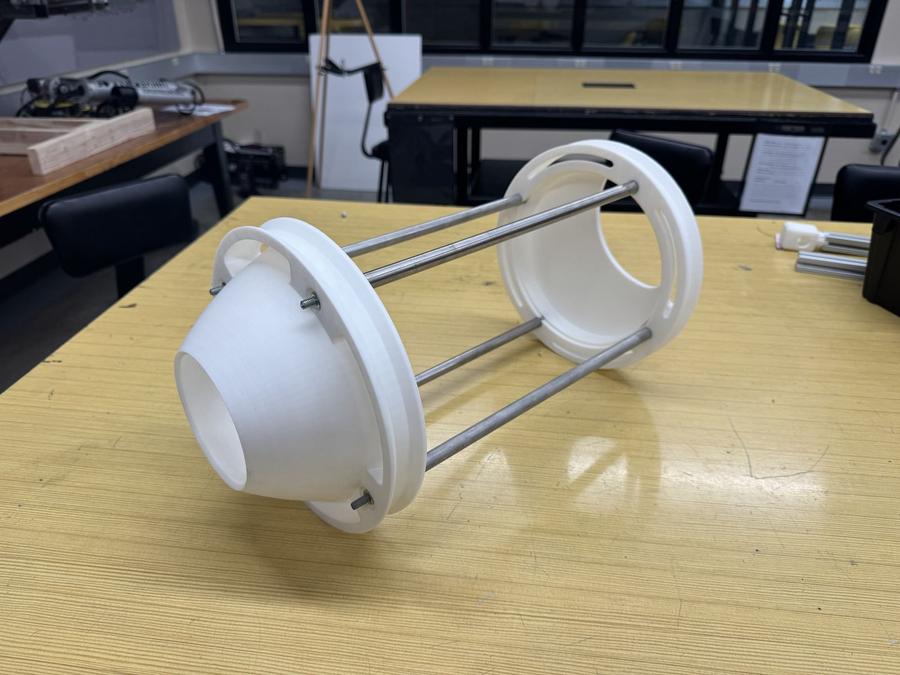
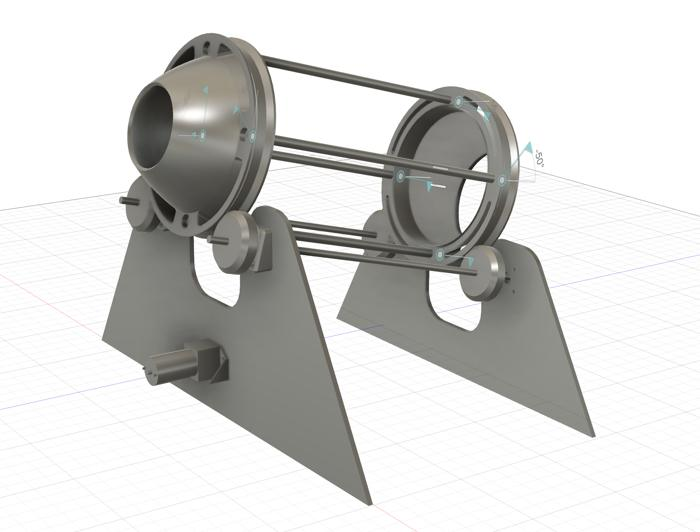
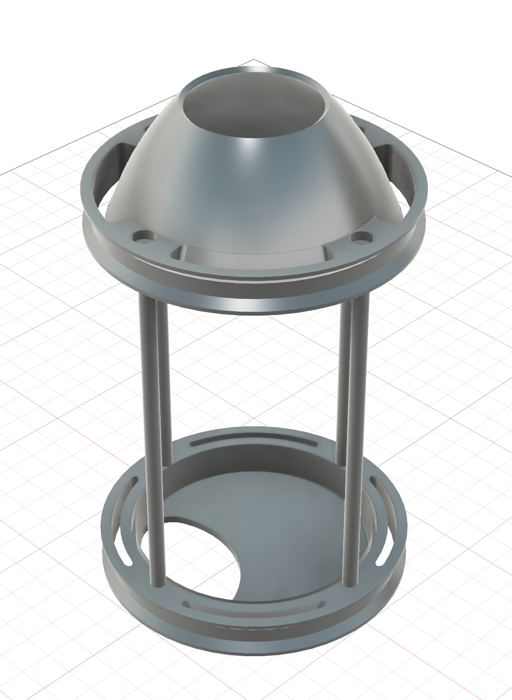
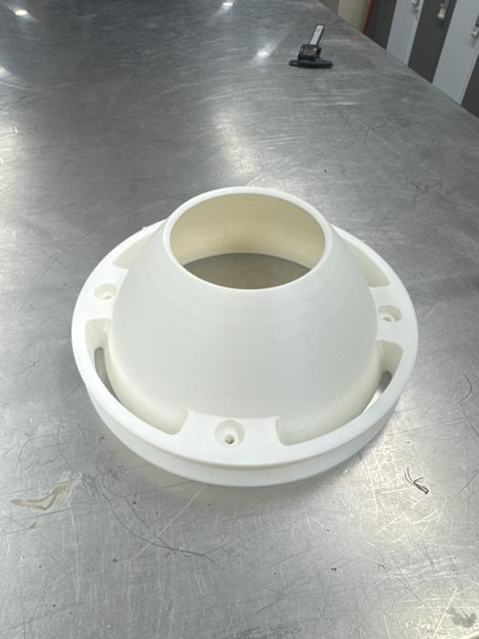
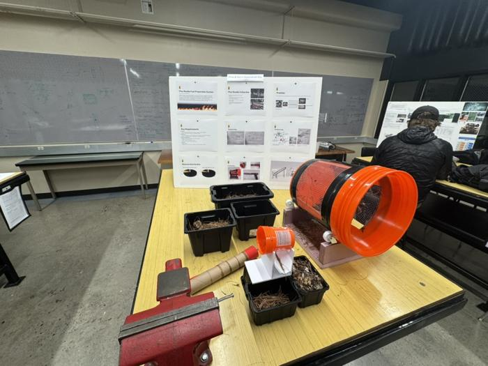
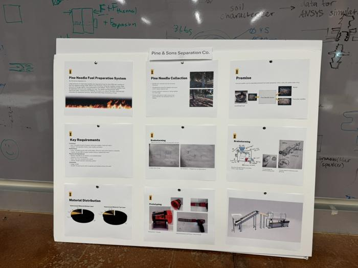
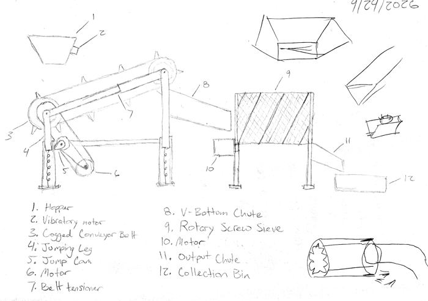
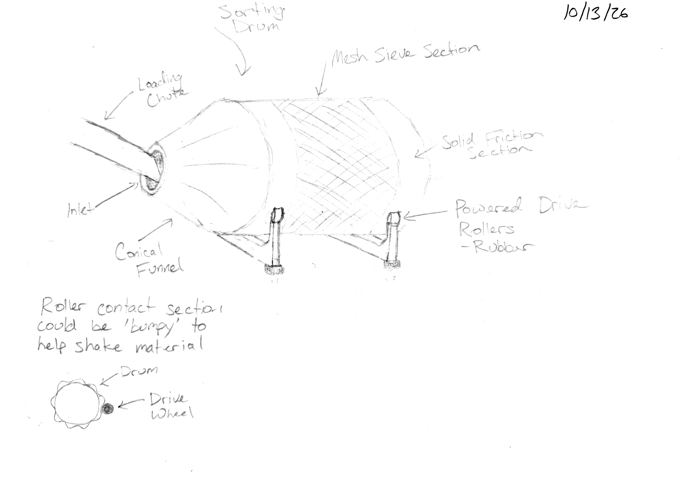
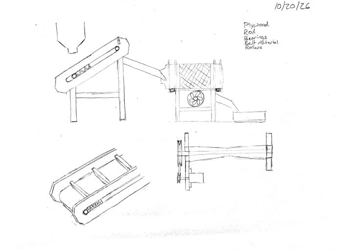

Pine needle separator
Senior capstone for the IFIRE Lab, Sep 2026 – present
Mechanical design lead
The IFIRE Lab uses large amounts of pine needles as fuel for fire testing, and right now they're cleaned by hand. Our team is building a machine that does it automatically. Material goes up an inclined conveyor that pulls out the big debris like pinecones and sticks, then into a rotating trommel that sieves out the rest. The goal is less than 1% debris in the finished needles.
I'm leading the mechanical design and working mostly on the conveyor stage. One idea we're testing uses a cam to bump the belt so larger pieces jump over a baffle while the needles keep going.












Early sketches





